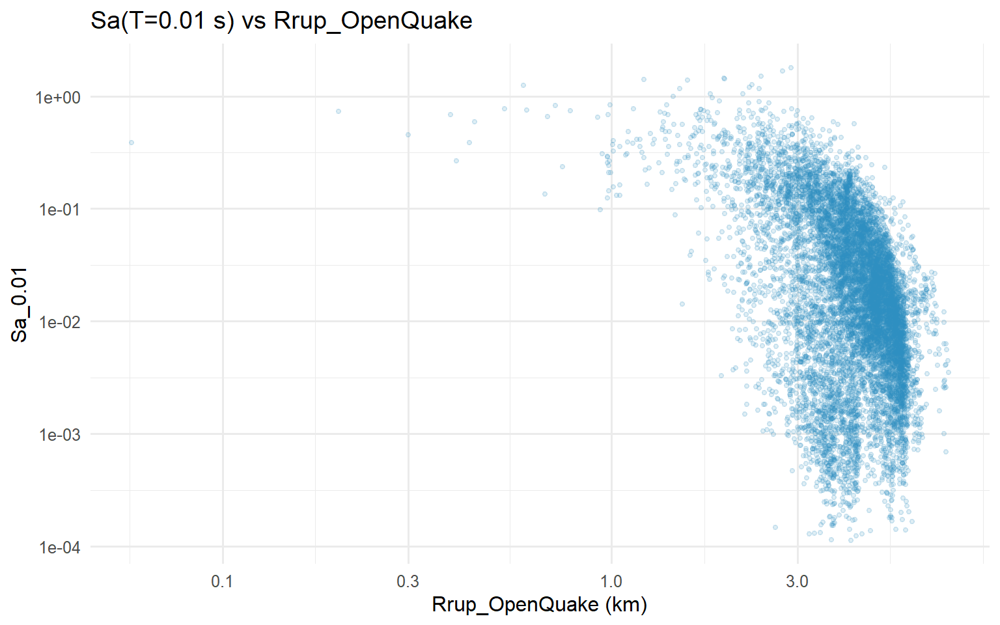
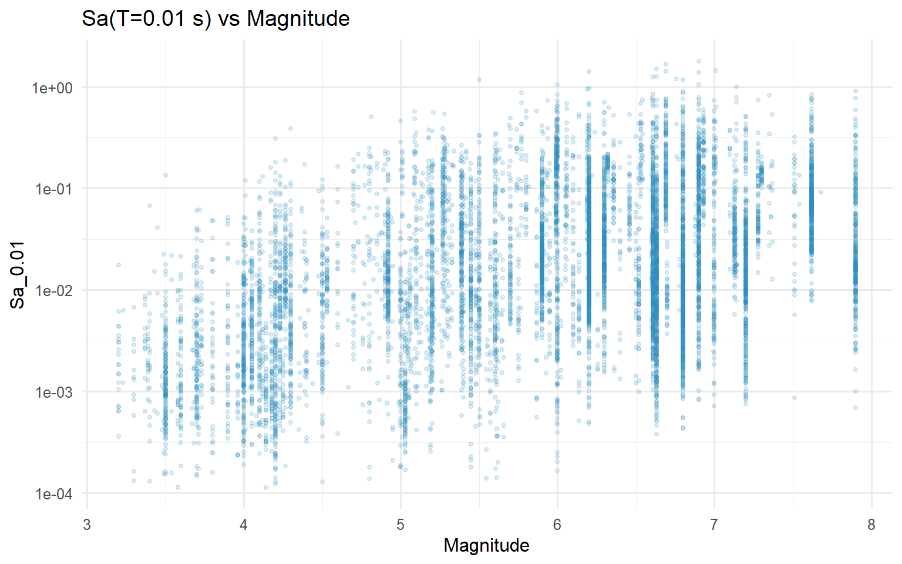
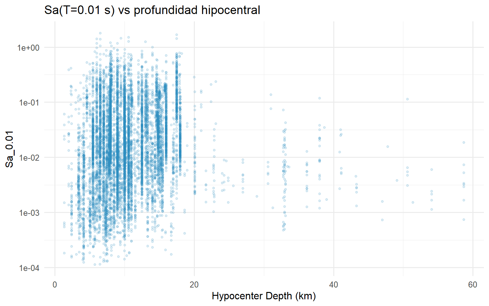
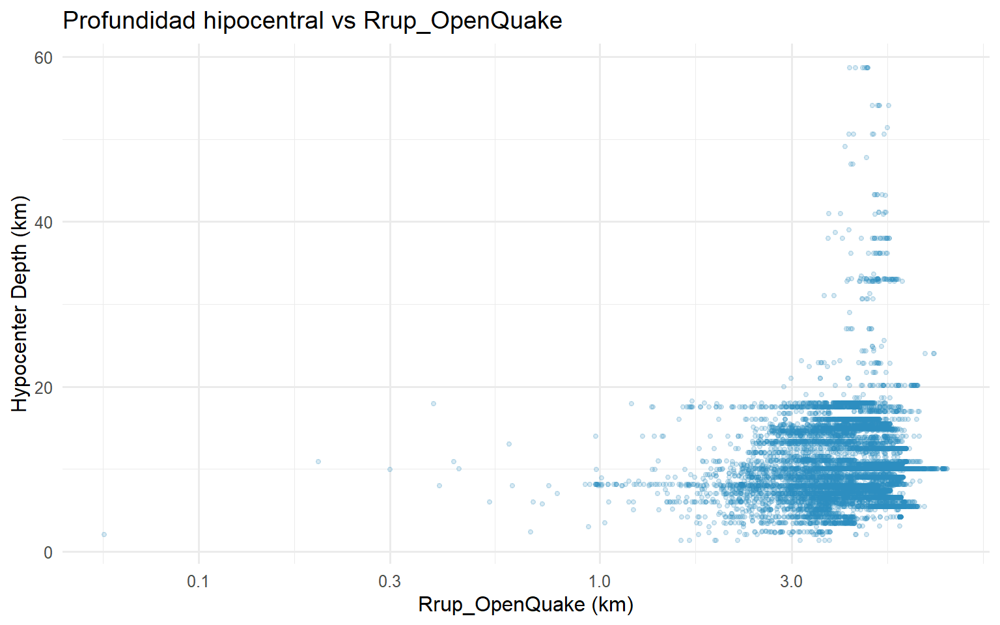
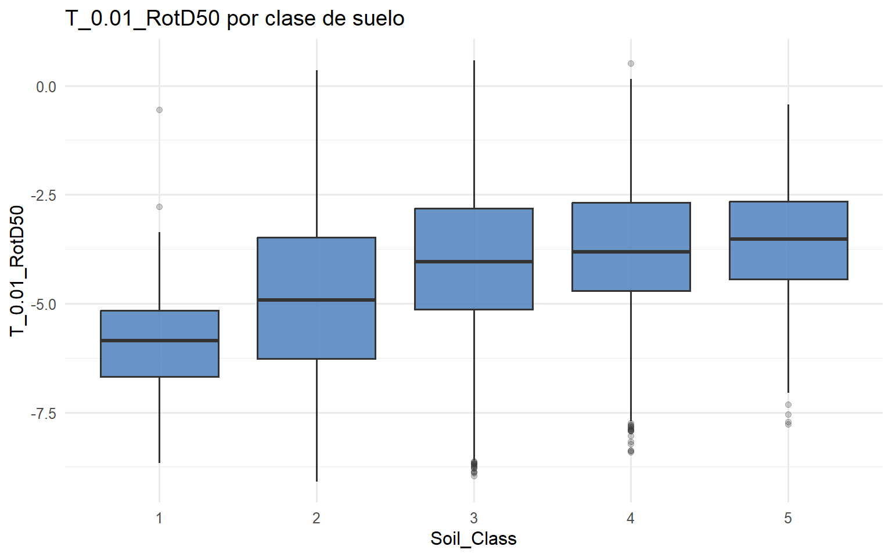
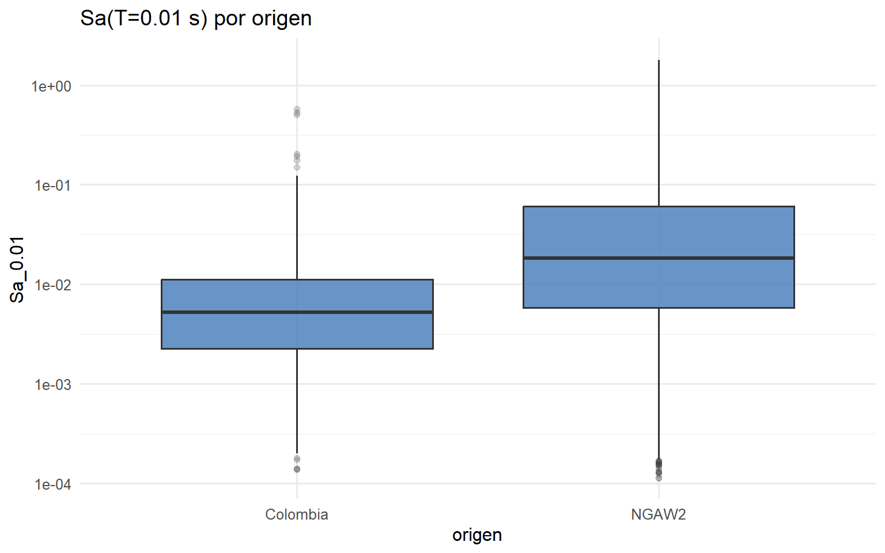
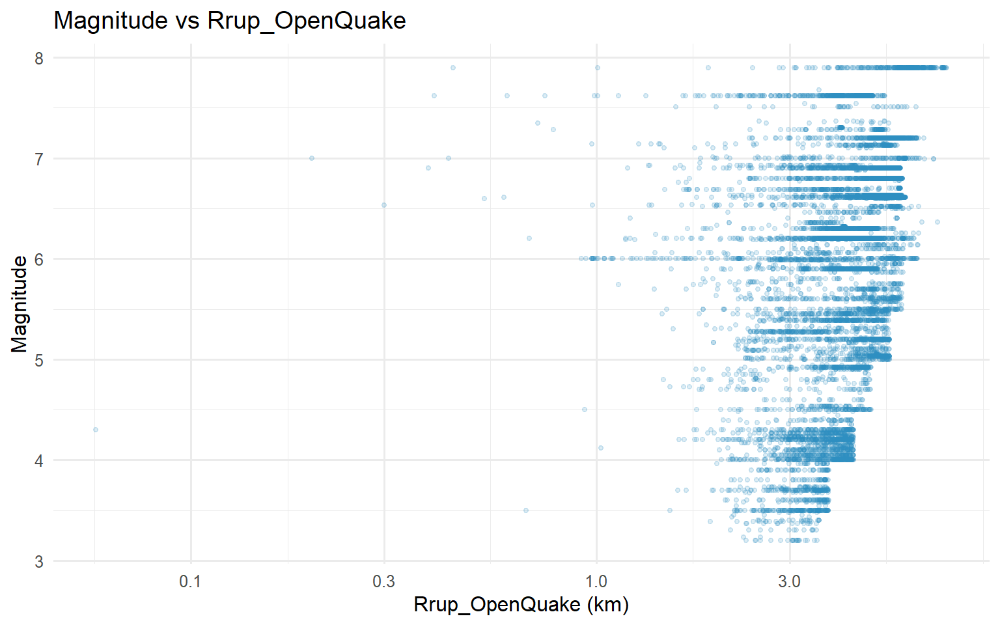
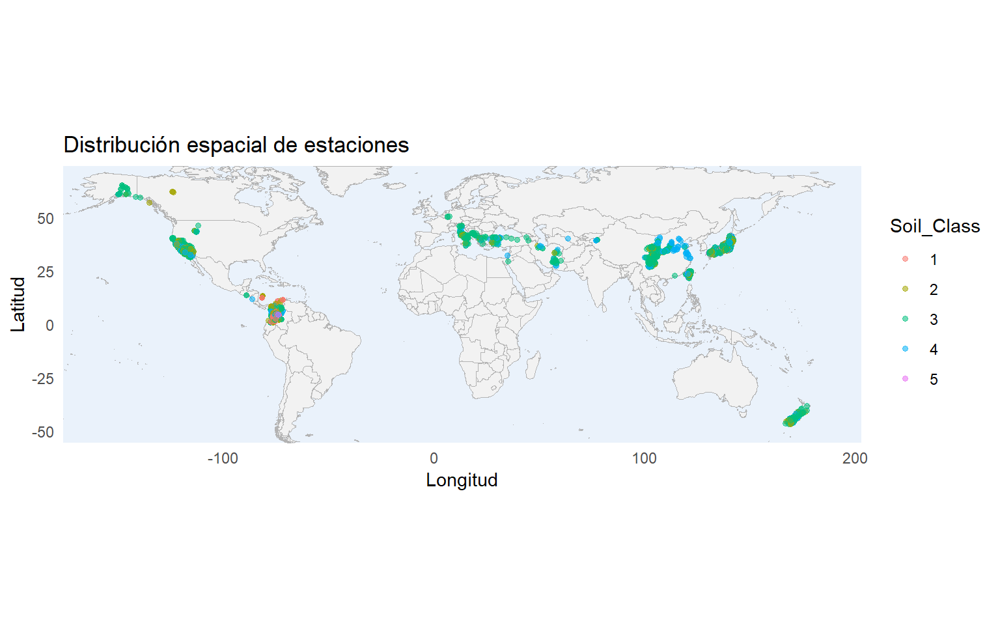
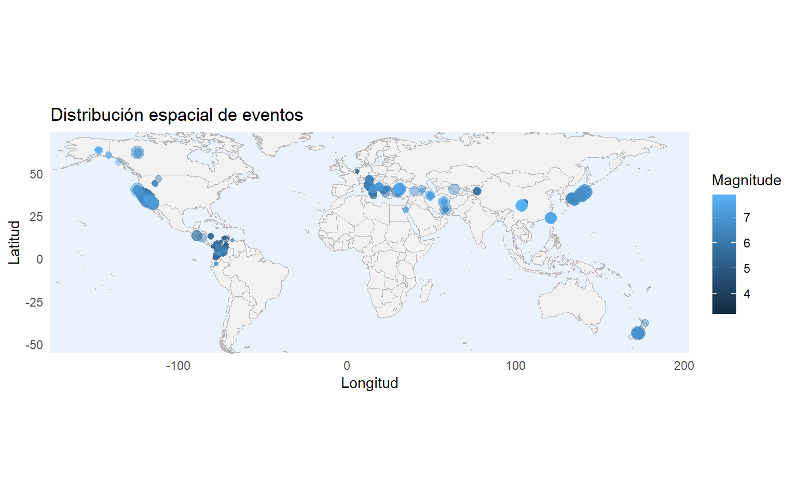

Capítulo 4 Análisis bivariado
4.1 T_0.01_RotD50 vs Rrup_OpenQuake
ggplot(df, aes(x = Rrup_OpenQuake, y = Sa_0_01)) +
geom_point(alpha = 0.15, size = 1.1, color = "#2b8cbe") +
scale_x_log10(labels = label_number()) +
scale_y_log10(labels = label_scientific()) +
labs(
title = "Sa(T=0.01 s) vs Rrup_OpenQuake",
x = "Rrup_OpenQuake (km)",
y = "Sa_0.01"
)
La nube es consistente con la lógica de atenuación: al aumentar la distancia de ruptura, la respuesta tiende a disminuir, aunque con dispersión considerable.
4.2 T_0.01_RotD50 vs Magnitude
ggplot(df, aes(x = Magnitude, y = Sa_0_01)) +
geom_point(alpha = 0.15, size = 1.1, color = "#2b8cbe") +
scale_y_log10(labels = label_scientific()) +
labs(
title = "Sa(T=0.01 s) vs Magnitude",
x = "Magnitude",
y = "Sa_0.01"
)
Se observa una tendencia positiva: magnitudes mayores suelen asociarse con respuestas espectrales mayores, aunque no de forma perfectamente determinista.
4.3 Hypocenter Depth (km) vs T_0.01_RotD50
ggplot(df, aes(x = `Hypocenter Depth (km)`, y = Sa_0_01)) +
geom_point(alpha = 0.15, size = 1.1, color = "#2b8cbe") +
scale_y_log10(labels = label_scientific()) +
labs(
title = "Sa(T=0.01 s) vs profundidad hipocentral",
x = "Hypocenter Depth (km)",
y = "Sa_0.01"
)
En el rango dominante de profundidades no aparece una relación monotónica fuerte; la variable parece actuar más como refinamiento que como explicador principal aislado.
4.4 Hypocenter Depth (km) vs Rrup_OpenQuake
ggplot(df, aes(x = Rrup_OpenQuake, y = `Hypocenter Depth (km)`)) +
geom_point(alpha = 0.18, size = 1.1, color = "#2b8cbe") +
scale_x_log10(labels = label_number()) +
labs(
title = "Profundidad hipocentral vs Rrup_OpenQuake",
x = "Rrup_OpenQuake (km)",
y = "Hypocenter Depth (km)"
)
La relación entre profundidad y distancia refleja más la composición geométrica del dataset que una dependencia simple.
4.5 T_0.01_RotD50 vs Soil_Class
ggplot(df, aes(x = Soil_Class, y = T_0.01_RotD50)) +
geom_boxplot(
fill = "#4F81BD",
alpha = 0.85,
outlier.alpha = 0.25
) +
labs(
title = "T_0.01_RotD50 por clase de suelo",
x = "Soil_Class",
y = "T_0.01_RotD50"
)
Las medianas y la dispersión no son idénticas entre clases, lo que sugiere que la condición de sitio está asociada al comportamiento de la respuesta.
4.6 T_0.01_RotD50 vs origen
ggplot(df, aes(x = origen, y = Sa_0_01)) +
geom_boxplot(
fill = "#4F81BD",
alpha = 0.85,
outlier.alpha = 0.20
) +
scale_y_log10(labels = label_scientific()) +
labs(
title = "Sa(T=0.01 s) por origen",
x = "origen",
y = "Sa_0.01"
)
Los grupos por origen muestran distribuciones diferentes, lo que refuerza la necesidad de controlar el sesgo por composición del dataset.
4.7 Magnitude vs Rrup_OpenQuake
ggplot(df, aes(x = Rrup_OpenQuake, y = Magnitude)) +
geom_point(alpha = 0.16, size = 1.0, color = "#2b8cbe") +
scale_x_log10(labels = label_number()) +
labs(
title = "Magnitude vs Rrup_OpenQuake",
x = "Rrup_OpenQuake (km)",
y = "Magnitude"
)
4.8 Magnitude vs Hypocenter Depth (km)
ggplot() +
geom_polygon(
data = mapa_base,
aes(x = long, y = lat, group = group),
fill = "grey95",
color = "grey70",
linewidth = 0.25
) +
geom_point(
data = df,
aes(x = `Station Longitude`, y = `Station Latitude`, color = Soil_Class),
alpha = 0.55,
size = 1.3
) +
coord_quickmap(xlim = xlim_map, ylim = ylim_map, expand = FALSE) +
labs(
title = "Distribución espacial de estaciones",
x = "Longitud",
y = "Latitud",
color = "Soil_Class"
) +
theme_minimal() +
theme(
panel.grid = element_blank(),
panel.background = element_rect(fill = "#eaf2fb", color = NA)
)
4.9 Mapa de eventos por magnitud
ggplot() +
geom_polygon(
data = mapa_base,
aes(x = long, y = lat, group = group),
fill = "grey95",
color = "grey70",
linewidth = 0.25
) +
geom_point(
data = df,
aes(x = `Seismic Longitude`, y = `Seismic Latitude`, color = Magnitude, size = Sa_0_01),
alpha = 0.45
) +
scale_size_continuous(range = c(1, 5), guide = "none") +
coord_quickmap(xlim = xlim_map, ylim = ylim_map, expand = FALSE) +
labs(
title = "Distribución espacial de eventos",
x = "Longitud",
y = "Latitud",
color = "Magnitude"
) +
theme_minimal() +
theme(
panel.grid = element_blank(),
panel.background = element_rect(fill = "#eaf2fb", color = NA)
)
4.10 Tablas de contingencia: origen vs Soil_Class
tab_origen_soil <- table(df$origen, df$Soil_Class)
chi_tbl <- suppressWarnings(chisq.test(tab_origen_soil))
contingency_summary <- tibble(
estadistico = unname(chi_tbl$statistic),
gl = unname(chi_tbl$parameter),
p_value = chi_tbl$p.value,
cramers_v = cramers_v(tab_origen_soil)
)
knitr::kable(as.data.frame.matrix(tab_origen_soil), caption = "Tabla de contingencia: origen vs Soil_Class")| 1 | 2 | 3 | 4 | 5 | |
|---|---|---|---|---|---|
| Colombia | 110 | 132 | 173 | 78 | 44 |
| NGAW2 | 0 | 1439 | 5880 | 1988 | 395 |
| estadistico | gl | p_value | cramers_v |
|---|---|---|---|
| 2117.41 | 4 | 0 | 0.45475 |
pct_by_col <- prop.table(tab_origen_soil, margin = 2)
knitr::kable(round(pct_by_col, 3), caption = "Porcentajes por columna (origen dentro de cada Soil_Class)")| 1 | 2 | 3 | 4 | 5 | |
|---|---|---|---|---|---|
| Colombia | 1 | 0.084 | 0.029 | 0.038 | 0.1 |
| NGAW2 | 0 | 0.916 | 0.971 | 0.962 | 0.9 |
La prueba de chi-cuadrado evalúa independencia entre ambas variables. El tamaño de efecto mediante Cramér’s V complementa la lectura para cuantificar la intensidad de la asociación.
4.11 Homogeneidad de varianzas por Soil_Class
levene_tbl <- car::leveneTest(T_0.01_RotD50 ~ Soil_Class, data = df) |>
as.data.frame() |>
tibble::rownames_to_column("fuente")
knitr::kable(levene_tbl, digits = 5, caption = "Prueba de Levene para T_0.01_RotD50 por Soil_Class")| fuente | Df | F value | Pr(>F) |
|---|---|---|---|
| group | 4 | 31.79192 | 0 |
| 10234 | NA | NA |
La variación de la respuesta no es necesariamente homogénea entre clases de suelo. Eso también justifica un tratamiento cuidadoso de esta variable en etapas posteriores.